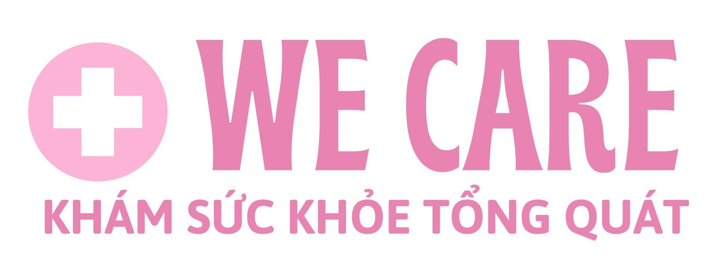

MEDIC HOAN MY SAI GON CLINIC
588 Ha Huy Giap Street - Thanh Loc,
District 12, Ho Chi Minh City.
PHIẾU KHÁM SỨC KHỎE TỔNG QUÁT
Họ và tên/ Patient Name:
Giới tính/Gender:
Năm sinh/Age–YOB:
SĐT:
Địa chỉ/ Address:

GÓI KHÁM TÀI TRỢ 100%
| Danh mục |
Chi phí |
Ghi Chú |
| A. Kiểm tra huyết áp |
10.000 |
Phát hiện các bệnh lí về huyết áp |
B. Bác sĩ tư vấn sức khỏe
Khám tổng quát |
150.000 |
Khám và tư vấn các bệnh lí về Tim, Phổi, bệnh đường hô hấp, tiêu hóa, thần kinh, nội tiết, cơ
xương khớp,... |
| C. Cận lâm sàng: |
450.000 |
|
| I. Xét nghiệm máu: |
| 1. Tầm soát đái tháo đường |
|
Định lượng đường huyết |
| 2. Tầm soát ung thư Gan |
|
AFP |
| II. Tầm soát bệnh lí đường tiết niệu, bệnh thận, tiểu đường, ... |
| Xét nghiệm 10 thông số (TS) trong nước tiểu: |
| 1. Tỷ trọng nước tiểu |
SG |
|
| 2. Tế bào bạch cầu |
LEU |
|
| 3. Hợp chất sinh ra do vi khuẩn |
NIT |
|
| 4. Độ acid của nước tiểu |
pH |
|
| 5. Hồng cầu niệu |
BLD |
|
| 6. Protein niệu |
PRO |
|
| 7. Đường trong nước tiểu |
GLU |
|
| 8. Cặn nước tiểu |
ASC |
|
| 9. Keton |
KET |
|
| 10. UBG |
Urobilinogen |
|
| D. Soi mao mạch |
300.000 |
Tầm soát nguy cơ đột quỵ |
| E. Soi da |
150.000 |
Khám da liễu |
| F. Khám mắt |
100.000 |
|
GHI CHÚ:
| STT |
DANH MỤC |
Ý NGHĨA THỰC HIỆN |
ĐƠN GIÁ |
GIÁ ƯU ĐÃI |
| 1 |
Máu - Tổng phân tích tế bào |
Tâm soát các bệnh về máu: thiếu máu, ung thư máu, suy tủy, nhiễm trùng, nhiễm khuẩn,... |
125,000 |
100,000 |
| 2 |
Nhóm máu ABO/Rh |
Xác định nhóm máu: A, B, AB, O/Rh+, Rh- |
120,000 |
90,000 |
| 3 |
HbA1C |
Đường huyết trung bình 3 tháng |
175,000 |
140,000 |
| 4 |
Glucose |
Định lượng đường huyết |
55,000 |
40,000 |
| 5 |
SGOT-SGPT-GGT |
Định lượng men gan, đánh giá tổn thương gan. |
150,000 |
120,000 |
| 6 |
Ure - Creatinine - eGFR |
Đánh giá bất thường chức năng thận |
120,000 |
90,000 |
| 7 |
Acid uric |
Phát hiện sớm bệnh Gout |
75,000 |
60,000 |
| 8 |
Cholesterol TP |
Đánh giá nguy cơ các bệnh về mỡ máu, tím, mạch, tăng huyết áp, tầm soát nguy cơ tai biến, đột quỵ. ...
|
150,000 |
120,000 |
| 9 |
Iron/Sắt huyết thanh |
Đo lượng sắt trong máu, thiếu sắt hoặc thừa sắt |
50,000 |
40,000 |
| 10 |
Ferritin |
Đo tổng lượng sắt dự trữ, kết hợp chẩn đoán. |
150,000 |
120,000 |
| 11 |
Điện giải (Na, K, Ca, CI) |
Xác định tình trạng các chất điện giải |
150,000 |
120,000 |